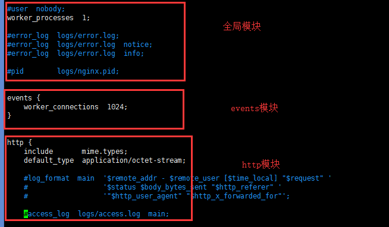

Nginx模块结构

全局模块
1 | worker_processes 2; #指定工作进程为2也可以设置为auto |
events模块
1 | worker_connections 1024; #一个进程同时可开启的最大连接数 |
http模块
1 | sendfile on; #开启通过sendfile()零拷贝传输文件，sendfile()可以在磁盘和TCP socket之间互相拷贝数据 |
请求定位
1 | location /test { |
路径匹配的优先级（由低到高）：
普通匹配 -> 长路径匹配 -> 正则匹配 -> 短路匹配 -> 精确匹配
反向代理
1 | location ~.*(/|/test) { |
如果访问localhost:80会直接跳转到百度，如果访问localhost:80/test会到百度域名下请求名为test的资源
负载均衡
1 | #http模块下配置 |